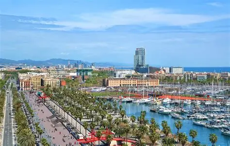

Чому саме Барселона?

Барселона — це столиця Каталонії, місто на березі Середземного моря з неймовірною архітектурою Антоніо Гауді та пляжною атмосферою.
Цікаві факти:
- Знаменитий храм Саграда Фамілія будується вже понад 140 років.
- У місті є штучні пляжі, які створили спеціально до Олімпійських ігор 1992 року.
Особиста оцінка:
Оцінка: 10/10 (За архітектуру та море).
Додаткова інформація: Читати у Вікіпедії